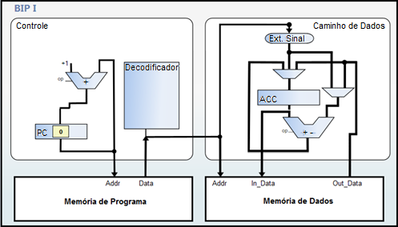

The BIP I was grounded in an RISC (Reduced Instruction-Ift Computer) architecture PIC microcontroller architecture. This processor is oriented accumulator and not own register bank as the processor MIPS (Microprocessor without Interlocked Pipeline Stages). All operations in BIP if I use the battery because it has only one registrar to perform data storage, with all require some arithmetic operations using operands placed in memory. (MORANDI et al. 2006).
The architecture of the BIP I have a few addressing modes, and all instructions have the same format. The format of instruction consists of an operation code with the size of 5 bits and an operand size of 11 bits, totaling 16 bits of instruction. (MORANDI; RAABE; ZEFERINO, 2006).
| BIP I Architecture. | |
|---|---|
| Size of the data word | 16 bits |
| Data Type | 16-bit integer with sign: -32768 a +32767 |
| Size of the instruction word | 16 bits |
| Registers |
ACC: Accumulator IR: Instruction Recorder PC: Program Counter |
| Instruction classo |
Memory Access: STO, LD, LDI Arithmetic: ADD, ADDI, SUB, SUBI Control: HLT |
Source: Adapted from Morandi (et al., 2006).
The registers that make up the architecture of the BIP I registrars are (i) PC (Program Counter) that points to the next instruction to be executed, (ii) IR (Instruction Register) that stores the instruction in execution: and (iii) ACC (Accumulator) that is used to store data during the execution of an Arithmetic operation or assignment. (MORANDI; RAABE; ZEFERINO, 2006).
The instruction set of BIP I comprises eight instruction being an instruction from Control three-four transfer instructions Arithmetic instructions. This instruction set can be seen below.
| Operation Code | Instruction | Operation | Class |
|---|---|---|---|
| 00000 | HLT | Stops the execution | Control |
| 00001 | STO | (address) ← ACC | Transfer |
| 00010 | LD | ACC ← (address) | Transfer |
| 00011 | LDI | ACC ← constant | Transfer |
| 00100 | ADD | ACC ← ACC + (address) | Arithmetic |
| 00101 | ADDI | ACC ← ACC + constant | Arithmetic |
| 00110 | SUB | ACC ← ACC - (address) | Arithmetic |
| 00111 | SUBI | ACC ← ACC - constant | Arithmetic |
| 01000 - 11111 | Reserved |
The BIP I have two specifications of organizing one using a Princeton-type structure, with a single memory for storing instruction data and other organization using the Harvard-type structure with separate instruction and data memories. (MORANDI et al. 2006). Despite having two different specifications, the most used is the structure Harvard, illustrated in the picture below.
Source: Vieira (2012).